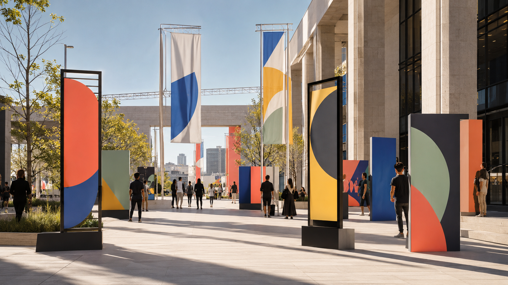
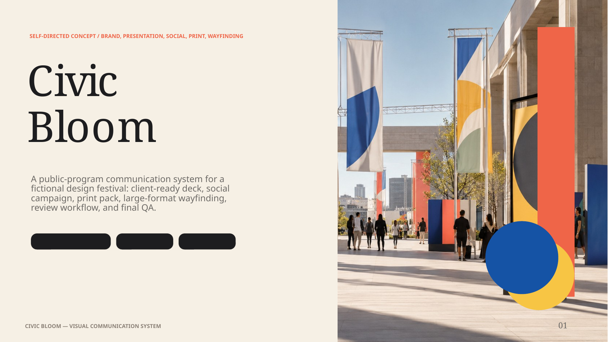
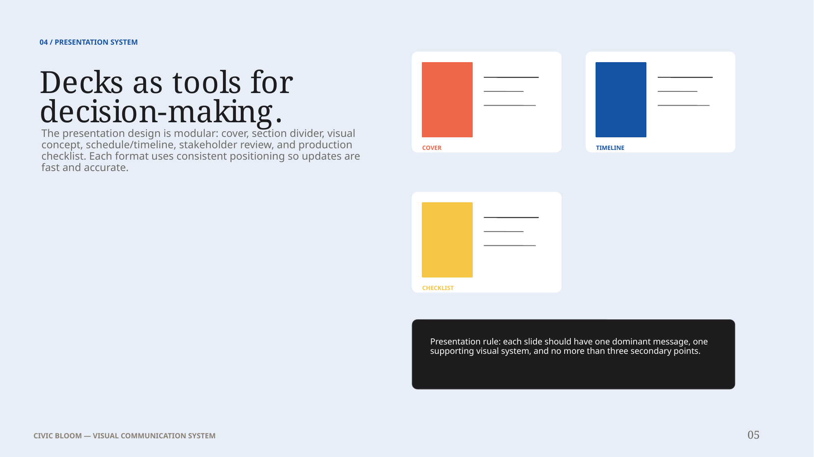

Presentation craft
A modular deck system with cover, brief, timeline, concept, production, and review slides.
Self-directed concept · Brand, presentation, print & wayfinding
A public-program identity system for a fictional design festival, built to demonstrate presentation craft, social production, print-ready thinking, environmental graphics, review workflow, and final QA.
This is an independent portfolio exercise, not a commissioned client project or a real event. The purpose is to show how one design system can scale across professional studio deliverables.


A production-forward design system
Civic Bloom is designed around the type of work a junior designer often produces in a studio environment: clear decks, fast social variations, print-ready one-pagers, polished visual submissions, signage-style pieces, and organized files that can survive review cycles.
The project is intentionally not only a brand exercise. It demonstrates how typography, layout, pacing, hierarchy, file hygiene, and final checks turn an attractive direction into usable studio output.
A modular deck system with cover, brief, timeline, concept, production, and review slides.
Social cutdowns, print collateral, badges, signage, banners, wayfinding, and event graphics.
Proofing, naming, export checks, linked assets, versioning, and handoff logic built into the concept.
Scope: This is a self-directed concept created to demonstrate portfolio skills. The mockups and spatial applications are conceptual; a real project would require client review, fabrication specs, accessibility testing, vendor coordination, and physical proofing.
Fictional public program
Civic Bloom imagines a citywide weekend of talks, open studios, guided walks, installations, and youth workshops. The visual system needed to be optimistic, public-facing, accessible at a distance, and efficient to adapt across many formats.
Make public design feel welcoming, organized, and easy to navigate.
Joyful, modular, and legible
The system uses circles, arches, leaves, half-moons, arrows, and color blocks as repeatable parts. Those parts can become a poster, a social template, a directional sign, a badge, or a deck layout without needing a full redesign each time.
Expressive serif headings create a human, inviting tone for campaign and presentation moments.
Functional sans-serif text carries schedules, labels, signs, captions, tables, specs, and handoffs.
Titles, dates, routes, and calls-to-action have clear order before decorative elements enter.
Shape language makes the system recognizable across print, digital, and environmental formats.
Images and shapes use protected zones so each format can be resized without losing the message.
Deck systems and storytelling
The deck is structured as a reusable client-facing system rather than a one-off sequence. It includes a cover, brief, audience map, brand system, deck modules, social system, print specifications, wayfinding application, collaboration workflow, motion storyboard, QA, and reflection.

The presentation uses consistent slide families so another designer can extend the system without rebuilding the entire deck.
Large title, one strong visual, clear context label, and direct project framing.
Numbered steps and short explanations support live presentation pacing.
Structured tables, file logic, specs, and QA notes for reliable delivery.
PowerPoint animation instinct
Civic Bloom includes a motion storyboard for native PowerPoint or Keynote builds. The goal is restrained animation: reveal a path, introduce zones, then resolve into a call-to-action.
The deck is designed so animated builds remain editable in PowerPoint, but static PDF exports still read clearly. Motion supports comprehension rather than entertainment.
From one-pager to public space
The print pack supports one-pagers, posters, leave-behinds, badges, and signage-style pieces. The environmental direction extends the same system into banners, directional panels, zone markers, and large-format storytelling.
Plan 0.125-inch bleed for standard print pieces and verify vendor-specific requirements.
Check effective image resolution at final output size before packaging files.
Proof color-critical assets, confirm CMYK conversion, and retain editable source files.
Test viewing distance, contrast, mounting, accessibility, material behavior, and site conditions.
Reviews, files, and final checks
This section is designed to show the production habits hiring teams ask for: clean files, organized handoffs, revision discipline, proofing, and final export checks.
Civic_Bloom/ ├── 01_Working/ │ ├── Deck_PPT/ │ ├── InDesign_Print/ │ ├── Illustrator_Signage/ │ ├── Photoshop_Retouching/ │ └── Web_CSS/ ├── 02_Linked_Assets/ │ ├── Images/ │ ├── Logos/ │ └── Fonts_Licenses/ ├── 03_Review/ │ ├── Leadership/ │ ├── Strategy/ │ └── Production/ ├── 04_Exports/ │ ├── Social_Final/ │ ├── Print_Ready/ │ └── Client_PDF/ └── 05_Archive/
CivicBloom_Deck_v04_ClientReview.pptxCivicBloom_OnePager_8.5x11_Print_v02.inddCivicBloom_Poster_24x36_Print_v03.pdfCivicBloom_Social_IG-Story_RouteA_01.pngCivicBloom_Wayfinding_ZoneB_Directional.aiCivicBloom_Web_LandingPage_CSSNotes.mdWebsite and CSS awareness
To reflect website maintenance and Webflow/CSS-adjacent expectations, Civic Bloom includes a landing-page component model with reusable sections, responsive content hierarchy, and editable event fields.
Hero, schedule module, venue cards, speaker tiles, route CTA, social embed, and footer. The same content model can be used in Webflow, a CMS, or a custom HTML/CSS page.
A modular landing page could reuse the same type scale, campaign colors, event cards, and CTA language from the deck and social system.
What this project proves
Civic Bloom was designed to show more than taste. It demonstrates how visual hierarchy, deck storytelling, social production, print setup, wayfinding logic, collaboration habits, and QA can work together in a production-forward design role.
A bright, modular identity that scales across deck, social, print, web, and public-space applications.
A colorful system can become noisy if hierarchy, contrast, and layout rhythm are not protected across formats.
Build native InDesign, Illustrator, and PowerPoint masters; proof print color; and test signage readability at full scale.
The PDF is optimized for quick portfolio review. The editable PPTX is included to demonstrate deck structure and layout construction.
Campaign assets and cutdowns
Fast social production without breaking the system.
The social kit uses repeatable crop zones, title placement, color families, and content modules so the same event can become a LinkedIn post, Instagram carousel, story, reel cover, and event reminder.
1600 × 900
Announcement and recap layouts with clear headline hierarchy and campaign context.
1080 × 1080
Square posts using shape blocks, crop-safe imagery, and consistent CTA placement.
1080 × 1920
Vertical layouts with platform-safe zones and immediate event recognition.
5-8 cards
Sequential storytelling for event routes, schedules, artists, or workshop tracks.